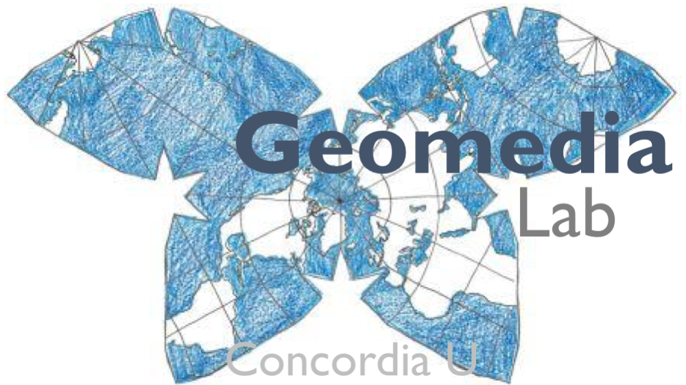

The Circus Stories Map Project
Context
In March 2020, with the rapid spread of COVID-19, bringing the initially localized virus to pandemic
proportions, most performing arts ceased their activities around the world. We are interested
specifically at what impact this has had on the contemporary circus scene worldwide through an
interactive open-source participatory mapping model. Circus practitioners, producers, and scholars are
all welcome to identify significant sites and venues, tour itineraries and recollections. Users will be able
to write short narratives that are attached to locations.
Who is involved
Concordia University Professors Louis Patrick Leroux (English and Études francaises) and Sébastien Caquard (Geography, Planning and Environment) working with their students Anna Vigeland and José Alavez have developed an OpenSource form-based map. The team is responsible for the design and maintenance of the map and its moderating and ongoing functionality.
The project is run out of Concordia University with the support of The Montreal Working Group on Circus Research and the Geomedia lab, where the map is housed.
Moderators from the team and the community will vet messages in French, English, and Spanish to
begin. We will later add Portuguese (Brazilian), Simplified Chinese and Russian as additional options
once we have the support and the resources.
Hackathons
Hackathons, where user are be encouraged to simultaneously enter mapping information to kick-start
the project will be held thanks to Concordia’s 4th Space, En Piste – The National Circus Arts Alliance,
MICC-International Contemporary Circus Marketplace and Circus Talk over the first few months of the
project. Participation is voluntary.
Later hackathons will be organized thematically or geographically.
3 ways to Put your Story on the Map
- Your story (contemporary circus sites and stories)
- History (historical sites and stories)
- This pandemic story (Where were you and where did you go when COVID-19 stopped
your show, rehearsals or other projects?)
Objectives
- To offer an accessible and moderated online space for the circus community to identify, tag and to share stories and informed observations on specific circus sites
- To create a world map of circus sites of significance to the circus and circus research communities
- To harness much oral and unwritten history through the online portal.
- To identify sites of multiple significance.
- To identify sites of interest, both historically and in contemporary practice.
- To map passages, trajectories of tours of important shows for historical reference.
- To build a lively, ongoing resource for artists, teachers and circus studies researchers.
Outcomes and later analysis
- Community-building through sharing, mapping and storytelling.
- A rich source of evolving and community-corrected information that will be of use as referential data to the circus community and to researchers.
- From the data set, researchers will be able to identify and understand the full and nuanced interconnectedness of the global circus community, its natural clusters, its cross-pollination.
- Close reading of the storytelling narratives will be useful to social historians and anyone interested in creative discourse analysis.
- Comparative circus and touring activity (historical, current and post-pandemic). We will
be able to chart the recovery as it occurs.
Partners:
- Concordia University
- Montreal Working Group on Circus Research
- Geomedia Lab
- 4th Space
- En Piste – The National Circus Arts Alliance
- MICC – Marché International de Cirque Contemporain / International Market of Contemporary Circus An initiative of TOHU/Montréal Complètement Cirque
- Circus Talk!
If you have questions about the scientific or scholarly aspects of this research, please contact the researcher:
Patrick.leroux@concordia.ca.
